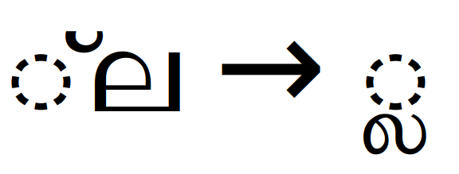

Malayalam shaping in OpenType¶
This document details the shaping procedure needed to display text runs in the Malayalam script.
Table of Contents
General information¶
The Malayalam script belongs to the Indic family, and follows the same general patterns as the other Indic scripts. More specifically, it belongs to the South Indic subgroup.
The Malayalam script is used to write multiple languages, most commonly Malayalam and Paniya. In addition, Sanskrit may be written in Malayalam, so Malayalam script runs may include glyphs from the Vedic Extensions block of Unicode.
There are two extant Malayalam script tags defined in OpenType, <mlym>
and <mlm2>. The older script tag, <mlym>, was deprecated in 2005.
Therefore, new fonts should be engineered to work with the <mlm2>
shaping model. However, if a font is encountered that supports only
<mlym>, the shaping engine should deal with it gracefully.
Terminology¶
OpenType shaping uses a standard set of terms for Indic scripts. The terms used colloquially in any particular language may vary, however, potentially causing confusion.
Matra is the standard term for a dependent vowel sign.
Halant and Virama are both standard terms for the “vowel-killer” sign. Unicode documents use the term “virama” most frequently, while OpenType documents use the term “halant” most frequently. In the Malayalam language, this sign is known as the chandrakkala.
Chandrabindu (or simply Bindu) is the standard term for the diacritical mark indicating that the preceding vowel should be nasalized. In the Malayalam language, this mark is known as the candrabindu.
The term base consonant is also critical to Indic shaping. The base consonant of a syllable is the consonant that carries the syllable’s vowel sound, either the inherent vowel (for an unmarked base consonant) or a dependent vowel (with the addition of a matra).
A syllable’s base consonant is generally rendered in its full form
(although it may form ligatures), while other consonants in the
syllable frequently take on secondary forms. Different GSUB
substitutions may apply to a script’s pre-base and post-base
consonants. The Reph form of the consonant “Ra” is an
example (post-base in traditional orthography and pre-base in
reformed orthography). Some of these substitutions create above-base
or below-base forms. For instance “La” takes a below-base form.
Syllables may also begin with an independent vowel instead of a consonant. In these syllables, the independent vowel is rendered in full-letter form, not as a matra, and the independent vowel serves as the syllable base, similar to a base consonant.
Where possible, using the standard terminology is preferred, as the use of a language-specific term necessitates choosing one language over all of the others that share a common script.
Glyph classification¶
Shaping Malayalam text depends on the shaping engine correctly classifying each glyph in the run. As with most other scripts, the classifications must distinguish between consonants, vowels (independent and dependent), numerals, punctuation, and various types of diacritical mark.
For most codepoints, the General Category property defined in the Unicode
standard is correct, but it is not sufficient to fully capture the
expected shaping behavior (such as glyph reordering). Therefore,
Malayalam glyphs must additionally be classified by how they are treated
when shaping a run of text.
Shaping classes and subclasses¶
The shaping classes listed in the tables that follow are defined so that they capture the positioning rules used by Indic scripts.
For most codepoints, the Shaping class is synonymous with the Indic Syllabic Category defined in Unicode. However, there are some
distinctions, where the defined category does not fully capture the
behavior of the character in the shaping process.
Several of the diacritic and syllable-modifying marks behave according
to their own rules and, thus, have a special class. These include
BINDU, VISARGA, AVAGRAHA, NUKTA, and VIRAMA. Some
less-common marks behave according to rules that are similar to these
common marks, and are therefore classified with the corresponding
common mark. The Vedic Extensions also include a CANTILLATION
class for tone marks.
Letters generally fall into the classes CONSONANT,
VOWEL_INDEPENDENT, and VOWEL_DEPENDENT. These classes help the
shaping engine parse and identify key positions in a syllable. For
example, Unicode categorizes dependent vowels as Mark [Mn], but the
shaping engine must be able to distinguish between dependent vowels
and diacritical marks (which are categorized as Mark [Mn]).
Malayalam uses two subclasses of consonant, CONSONANT_DEAD and
CONSONANT_PRE_REPHA.
The CONSONANT_DEAD subclass is used for the Malayalam chillu
variants of certain consonants. It indicates that the characters
should match tests for consonants, such as when identifying
syllables, but that, unlike
standard consonants, they carry no inherent vowel. The lack of an
inherent vowel is important during the initial
reordering stage.
The CONSONANT_PRE_REPHA subclass is used only for the “Dot Reph”
(U+0D4E), a dead-consonant version of “Reph” (or “Repha”). In modern
Malayalam orthography, “Dot Reph” is uncommon. As with
CONSONANT_DEAD, this subclass should match tests for
consonants. Because the “Dot Reph” character is a “Reph”, however, it
must be treated as a “Reph” during the initial and final reordering stages.
Other characters, such as symbols and miscellaneous letters (for example, letter-like symbols that only occur as standalone entities and do not occur within syllables), need no special attention from the shaping engine, so they are not assigned a shaping class.
Numbers are classified as NUMBER, even though they evoke no special
behavior from the Indic shaping rules, because there are OpenType features that
might affect how the respective glyphs are drawn, such as tnum,
which specifies the usage of tabular-width numerals, and sups, which
replaces the default glyphs with superscript variants.
Marks and dependent vowels are further labeled with a mark-placement subclass, which indicates where the glyph will be placed with respect to the base character to which it is attached. The actual position of the glyphs is determined by the lookups found in the font’s GPOS table, however, the shaping rules for Indic scripts require that the shaping engine be able to identify marks by their general position.
For example, left-side dependent vowels (matras), classified
with LEFT_POSITION, must frequently be reordered, with the final
position determined by whether or not other letters in the syllable
have formed ligatures or combined into conjunct forms. Therefore, the
LEFT_POSITION subclass of the character must be tracked throughout
the shaping process.
There are four basic mark-placement subclasses for dependent vowels (matras). Each corresponds to the visual position of the matra with respect to the syllable base to which it is attached:
LEFT_POSITIONmatras are positioned to the left of the syllable base.RIGHT_POSITIONmatras are positioned to the right of the syllable base.TOP_POSITIONmatras are positioned above the syllable base.BOTTOM_POSITIONmatras are positioned below syllable base.
These positions may also be referred to elsewhere in shaping documents as:
Pre-base matras
Post-base matras
Above-base matras
Below-base matras
respectively. The LEFT, RIGHT, TOP, and BOTTOM designations
corresponds to Unicode’s preferred terminology. The Pre, Post,
Above, and Below terminology is used in the official descriptions
of OpenType GSUB and GPOS features. Shaping engines may, internally,
use whichever terminology is preferred.
In addition, dependent-vowel codepoints that are composed of multiple
components will be designated in character tables as having a compound
mark-placement subclass, such as TOP_AND_RIGHT or LEFT_AND_RIGHT.
However, these multi-part matras are decomposed into separate matra components during the shaping process. After the decomposition, each matra component will belong to exactly one of the four basic mark-placement subclasses.
For most mark and dependent-vowel codepoints, the mark-placement
subclass is synonymous with the Indic Positional Category defined
in Unicode. However, there are some distinctions, where the defined
category does not fully capture the behavior of the character in the
shaping process.
Malayalam includes two special marks that are classified as
PURE_KILLER, “Vertical Bar Virama” (U+0D3B) and “Circular Virama”
(U+0D3C). These marks, like the Virama or “Halant”, suppress the
inherent vowel of a consonant. However, unlike “Halant”, the use of a
PURE_KILLER prevents the formation of ligatures and conjuncts, and
the mark itself is always rendered explicitly.
Consequently, these marks behave like dependent-vowel marks (matras). Shaping engines may choose to treat them as matras for simplicity.
Malayalam character tables¶
Separate character tables are provided for the Malayalam and Vedic
Extensions blocks as well as for other miscellaneous characters that
are used in <mlm2> text runs:
The tables list each codepoint along with its Unicode general category, its shaping class, and its mark-placement subclass. The codepoint’s Unicode name and an example glyph are also provided.
For example:
Codepoint |
Unicode category |
Shaping class |
Mark-placement subclass |
Glyph |
|---|---|---|---|---|
|
Mark [Mn] |
BINDU |
TOP_POSITION |
ഁ Candrabindu |
|
Letter |
CONSONANT |
null |
ക Ka |
Codepoints with no assigned meaning are designated as unassigned in the Unicode category column.
Assigned codepoints with a null in the Shaping class column evoke no special behavior from the shaping engine.
The Mark-placement subclass column indicates mark-placement positioning for codepoints in the Mark category. Assigned, non-mark codepoints have a null in this column and evoke no special mark-placement behavior. Marks tagged with [Mn] in the Unicode category column are categorized as non-spacing; marks tagged with [Mc] are categorized as spacing-combining.
Some codepoints in the tables use a Shaping class that differs from the codepoint’s Unicode General Category. The Shaping class takes precedence during OpenType shaping, as it captures more specific, script-aware behavior.
Special-function codepoints¶
Other important characters that may be encountered when shaping runs
of Malayalam text include the dotted-circle placeholder (U+25CC), the
zero-width joiner (U+200D) and zero-width non-joiner (U+200C), and
the no-break space (U+00A0).
Each of these is of particular importance to shaping engines, because these codepoints interact with the shaping engine, the text run, and the active font, either to mediate non-default shaping behavior or to relay information about the current shaping process.
The dotted-circle placeholder is frequently used when displaying a dependent vowel (matra) or a combining mark in isolation. Real-world text syllables may also use other characters, such as hyphens or dashes, in a similar placeholder fashion; shaping engines should cope with this situation gracefully.
Dotted-circle placeholder characters (like any Unicode codepoint) can appear anywhere in text input sequences and should be rendered normally. GPOS positioning lookups should attach mark glyphs to dotted circles as they would to other non-mark characters. As visible glyphs, dotted circles can also be involved in GSUB substitutions.
In addition to the default input-text handling process, shaping engines may also insert dotted-circle placeholders into the text sequence. Dotted-circle insertions are required when a non-spacing mark or dependent sign is formed with no base character present.
This requirement covers:
Dependent signs that are assigned their own individual Unicode codepoints (such as most dependent-vowel marks or matras)
Dependent signs that are formed only by specific sequences of other codepoints (such as “Reph”)
The zero-width joiner (ZWJ) is primarily used to prevent the formation of a conjunct from a “Consonant,Halant,Consonant” sequence.
The sequence “Consonant,Halant,ZWJ,Consonant” blocks the formation of a conjunct between the two consonants.
Note, however, that the “Consonant,Halant” subsequence in the above example may still trigger a half-forms feature. To prevent the application of the half-forms feature in addition to preventing the conjunct, the zero-width non-joiner (ZWNJ) must be used instead.
The sequence “Consonant,Halant,ZWNJ,Consonant” should produce the first consonant in its standard form, followed by an explicit “Halant”.
A secondary usage of the zero-width joiner is to prevent the formation of “Reph”.
An initial “Ra,Halant,ZWJ” sequence should not produce a “Reph”, even where an initial “Ra,Halant” sequence without the zero-width joiner would otherwise produce a “Reph”.
Note: Malayalam differs from many Indic scripts in that “Reph” usage is rare in the modern orthography. In word-initial positions, a “Ra,Halant” sequence is typically replaced by a dead-consonant form, “Chillu R”.
The ZWJ and ZWNJ characters are, by definition, non-printing control characters and have the Default_Ignorable property in the Unicode Character Database. In standard text-display scenarios, their function is to signal a request from the user to the shaping engine for some particular non-default behavior. As such, they are not rendered visually.
Note: Naturally, there are special circumstances where a user or document might need to request that a ZWJ or ZWNJ be rendered visually, such as when illustrating the OpenType shaping process, or displaying Unicode tables.
Because the ZWJ and ZWNJ are non-printing control characters, they can be ignored by any portion of a software text-handling stack not involved in the shaping operations that the ZWJ and ZWNJ are designed to interface with. For example, spell-checking or collation functions will typically ignore ZWJ and ZWNJ.
Similarly, the ZWJ and ZWNJ should be ignored by the shaping engine when matching sequences of codepoints against the backtrack and lookahead sequences of a font’s GSUB or GPOS lookups.
For example:
A lookup that substitutes an alternate version of a dependent-vowel (matra) glyph when it is preceded by “Ka,Halant,Tta” should still be applied if the dependent-vowel codepoint is preceded by “Ka,Halant,ZWJ,Tta” in the text run.
The no-break space (NBSP) is primarily used to display those codepoints that are defined as non-spacing (marks, dependent vowels (matras), below-base consonant forms, and post-base consonant forms) in an isolated context, as an alternative to displaying them superimposed on the dotted-circle placeholder. These sequences will match “NBSP,ZWJ,Halant,Consonant”, “NBSP,mark”, or “NBSP,matra”.
In addition to general punctuation, runs of Malayalam text often use the
danda (U+0964) and double danda (U+0965) punctuation marks from
the Devanagari block.
The <mlm2> shaping model¶
Processing a run of <mlm2> text involves six top-level stages:
Identifying syllables and other sequences
Initial reordering
Applying the basic substitution features from GSUB
Final reordering
Applying all remaining substitution features from GSUB
Applying all remaining positioning features from GPOS
As with other Indic scripts, the initial reordering stage and the final reordering stage each involve applying a set of several script-specific rules. The basic substitution features must be applied to the run in a specific order. The remaining substitution features in stage five, however, do not have a mandatory order.
Indic scripts follow many of the same shaping patterns, but they differ in a few critical characteristics that the shaping engine must track. These include:
The position of the base consonant in a syllable.
The final position of “Reph”.
Whether “Reph” must be requested explicitly or if it is formed by a specific, implicit sequence.
Whether the below-base forms feature is applied only to consonants before the syllable base, only to consonants after the base consonant, or to both.
The ordering positions for dependent vowels (matras). Specifically, right-side, above-base, and below-base matras follow different rules in different scripts. All Indic scripts position left-side matras in the same manner, in the ordering position
POS_PREBASE_MATRA.
With regard to these common variations, Malayalam’s specific shaping characteristics include:
BASE_POS_LAST= The base consonant of a syllable is the last consonant, not counting any special final-consonant forms.REPH_POS_AFTER_MAIN= “Reph” is ordered after the syllable base.REPH_MODE_LOGICAL_REPHA= “Reph” is encoded as its own Unicode codepoint (“Repha”), but it must still be reordered.BLWF_MODE_PRE_AND_POST= The below-forms feature is applied both to pre-base consonants and to post-base consonants.MATRA_POS_TOP= null = Unlike most other Indic scripts, Malayalam does not use any above-base matras. Therefore, this shaping characteristic does not apply.MATRA_POS_RIGHT=POS_AFTER_POST= Right-side matras are ordered after all post-base consonant forms.MATRA_POS_BOTTOM=POS_AFTER_POST= Below-base matras are ordered after all post-base consonant forms.
These characteristics determine how the shaping engine must reorder certain glyphs, how base consonants are determined, and how “Reph” should be encoded within a run of text.
Note: Unlike most other Indic scripts, Malayalam does not use above-base matras. Therefore
MATRA_POS_TOPcan be set to null.
1: Identifying syllables and other sequences¶
A syllable in Malayalam consists of a valid orthographic sequence that may be followed by a “tail” of modifier signs.
Note: The Malayalam Unicode block enumerates five modifier signs, “Combining Anusvara Above” (
U+0D00), “Candrabindu” (U+0D01), “Anusvara” (U+0D02), “Visarga” (U+0D03), and “Avagraha” (U+0D3D). In addition, Sanskrit text written in Malayalam may include additional signs from Vedic Extensions block.
Each syllable contains exactly one vowel sound. Valid syllables may begin with either a consonant or an independent vowel.
If the syllable begins with a consonant, then the consonant that provides the vowel sound is referred to as the “base” consonant. If the syllable begins with an independent vowel, that independent vowel is the syllable’s only vowel sound and serves as the “base”.
Note: A consonant that is not accompanied by a dependent vowel (matra) sign carries the script’s inherent vowel sound. This vowel sound is changed by a dependent vowel (matra) sign following the consonant.
From the shaping engine’s perspective, the main distinction between a syllable with a base consonant and a syllable with an independent-vowel base is that a syllable with an independent-vowel base is less likely to include additional consonants in special forms and less likely to include dependent vowel signs (matras). Therefore, in the common case, vowel-based syllables may involve less reordering, substitution feature applications, and other processing than consonant-based syllables.
In some languages and orthographies, vowel-based syllables are not permitted to include additional consonants or matras, and certain GSUB substitution features do not occur. However, there are often known exceptions, and real-world text makes no such guarantees.
Note: Shaping engines may choose to treat independent-vowel bases like base consonants for the sake of simplicity or code reuse.
However, implementations that take this approach should note that removing the distinction between base consonants and independent-vowel bases entirely may have unintended consequences. Making guarantees about the correctness of the results or about language-specific tests is out of scope for this document.
Generally speaking, the base consonant is the final consonant of the
syllable and its vowel sound designates the end of the syllable. This
rule is synonymous with the BASE_POS_LAST characteristic mentioned
earlier.
Non-base consonants in a valid syllable will be separated by “Halant” marks. Pre-base consonants will be followed by “Halant”, while post-base consonants will be preceded by “Halant”.
Pre-baseC Halant BaseC Halant Post-baseC
The algorithm for correctly identifying the base consonant includes a test to recognize these sequences and not mis-identify the base consonant.
All consonants in Malayalam can potentially occur in pre-base position. The “Halant” marks on pre-base consonants indicate that they carry no vowel. Instead, they affect syllable pronunciation by combining with the base consonant (e.g., “thr” or “spl”).
Three consonants in Malayalam are allowed to occur in post-base position: “Ya”, “Va”, and “Ra”. The post-base “Ra” is reordered to before the base consonant or syllable base during the final-reordering stage of the shaping process. The post-base forms of “Ya” and “Va” remain in post-base position.
Malayalam also includes one consonant that can take on a below-base form, “La”.
As with other Indic scripts, the consonant “Ra” receives special treatment. Malayalam differs from many Indic scripts in that “Reph” usage is rare in the modern orthography.
In word-initial positions, a “Ra,Halant” sequence is typically replaced by a dead-consonant form, “Chillu R”.
Malayalam text runs may also include the explicit variant of “Reph”,
the “Dot Reph” (U+0D4E), also known as “Repha”.
Note: Modern Malayalam orthography prefers using the “Chillu R” instead of “Reph”. Therefore, Malayalam fonts may omit implementation of the “Reph” substitution entirely.
As is the case with “Reph”, “Repha” characters must be reordered after the
syllable-identification stage is complete. This is the
REPH_MODE_LOGICAL_REPHA shaping characteristic.
Note: Generally speaking, OpenType fonts will implement support for any below-base, post-base, and pre-base-reordering consonant forms by including the necessary substitution rules in their
blwf,pstf, andpreflookups in GSUB.Consequently, whenever shaping engines need to determine whether or not a given consonant can take on such a special form, the most appropriate test is to check if the consonant is included in the relevant GSUB lookup. Other implementations are possible, such as maintaining static tables of consonants, but checking for GSUB support ensures that the expected behavior is implemented in the active font, and is therefore the most reliable approach.
In addition to valid syllables, standalone sequences may occur, such as when an isolated codepoint is shown in example text.
Note: Foreign loanwords, when written in the Malayalam script, may not adhere to the syllable-formation rules described above. In particular, it is not uncommon to encounter foreign loanwords that contain a word-final suffix of consonants.
Nevertheless, such word-final suffixes will be correctly matched by the regular expressions listed below. These loanwords are pronounced different, which raises issues for potential readers, but the character sequences do not affect the shaping process.
Syllables should be identified by examining the run and matching glyphs, based on their categorization, using regular expressions.
The following general-purpose Indic-shaping regular expressions can be used to match Malayalam syllables.
The regular expressions utilize the shaping classes from the tables above. For the purpose of syllable identification, more general classes can be used, as defined in the following table. This simplifies the resulting expressions.
_ra_ = The consonant "Ra"
_consonant_ = ( `CONSONANT` | `CONSONANT_DEAD` ) - _ra_
_vowel_ = `VOWEL_INDEPENDENT`
_nukta_ = `NUKTA`
_halant_ = `VIRAMA`
_zwj_ = `JOINER`
_zwnj_ = `NON_JOINER`
_matra_ = `VOWEL_DEPENDENT` | `PURE_KILLER`
_syllablemodifier_ = `SYLLABLE_MODIFIER` | `BINDU` | `VISARGA` | `GEMINATION_MARK`
_vedicsign_ = `CANTILLATION`
_placeholder_ = `PLACEHOLDER` | `CONSONANT_PLACEHOLDER` | `NUMBER`
_dottedcircle_ = `DOTTED_CIRCLE`
_repha_ = `CONSONANT_PRE_REPHA`
_consonantmedial_ = `CONSONANT_MEDIAL`
_symbol_ = `SYMBOL` | `AVAGRAHA`
_consonantwithstacker_ = `CONSONANT_WITH_STACKER`
_other_ = `OTHER` | `MODIFYING_LETTER`
Note: the ra identification class is mutually exclusive with the consonant class. The union of the consonant and ra classes is used in the regular expression elements below in order to correctly identify “Ra” characters that do not trigger “Reph” or “Rakaar” shaping behavior.
Note, also, that the cantillation mark “combining Ra” in the Devanagari Extended block does not belong to the ra identification class, and that the other “combining consonant” cantillation marks in the Devanagari Extended block do not belong to the consonant identification class.
Note: The placeholder identification class includes codepoints that are often used in place of vowels or consonants when a document needs to display a matra, mark, or special form in isolation or in another context beyond a standard syllable. Examples of placeholder codepoints include hyphens and non-breaking spaces. Sequences that utilize this approach should be identified as “standalone” syllables.
The placeholder identification class also includes numerals, which are commonly used as word substitutes within normal text. Examples include ordinals (e.g., “4th”).
Note: The other identification class includes codepoints that do not interact with adjacent characters for shaping purposes. Even though some of these codepoints (such as
MODIFYING_LETTER) can occur within words, they evoke no behavior from the shaping engine and do not factor into the regular expressions that follow. Therefore, the shaping engine may choose to ignore them during syllable identification; they are listed here for completeness.
These identification classes form the bases of the following regular expression elements:
C = _consonant_ | _ra_
Z = _zwj_ | _zwnj_
REPH = (_ra_ _halant_) | _repha_
CN = C _zwj_? _nukta_?
FORCED_RAKAR = _zwj_ _halant_ _zwj_ _ra_
S = _symbol_ _nukta_?
MATRA_GROUP = Z{0,3} _matra_ _nukta_? (_halant_ | FORCED_RAKAR)?
SYLLABLE_TAIL = (Z? _syllablemodifier_ _syllablemodifier_? _zwnj_?)? _vedicsign_{0,3}
HALANT_GROUP = Z? _halant_ (_zwj_ _nukta_?)?
FINAL_HALANT_GROUP = HALANT_GROUP | (_halant_ _zwnj_)
MEDIAL_GROUP = _consonantmedial_?
HALANT_OR_MATRA_GROUP = FINAL_HALANT_GROUP | MATRA_GROUP*)
Note: Practically speaking, shaping engines are highly unlikely to encounter more than 4 sequential
(MATRA_GROUP)instances in any real-word syllables. Thus, implementations may choose to limit occurrences by limiting the above expressions to a finite length, such as(MATRA_GROUP){0,4}.
Using the above elements, the following regular expressions define the possible syllable types:
A consonant-based syllable will match the expression:
(_repha_|_consonantwithstacker_)? (CN HALANT_GROUP)* CN MEDIAL_GROUP HALANT_OR_MATRA_GROUP SYLLABLE_TAIL
Note: Practically speaking, shaping engines are highly unlikely to encounter more than 4 sequential
(CN HALANT_GROUP)instances in any real-word syllables. Thus, implementations may choose to limit occurrences by limiting the above expressions to a finite length, such as(CN HALANT_GROUP){0,4}.
A vowel-based syllable will match the expression:
REPH? _vowel_ _nukta_? (_zwj_ | (HALANT_GROUP CN)* MEDIAL_GROUP HALANT_OR_MATRA_GROUP SYLLABLE_TAIL)
Note: Practically speaking, shaping engines are highly unlikely to encounter more than 4 sequential
(HALANT_GROUP CN)instances in any real-word syllables. Thus, implementations may choose to limit occurrences by limiting the above expressions to a finite length, such as(HALANT_GROUP CN){0,4}.
A standalone syllable will match the expression:
((_repha_|_consonantwithstacker_)? _placeholder_ | REPH? _dottedcircle_) _nukta_? (HALANT_GROUP CN)* MEDIAL_GROUP HALANT_OR_MATRA_GROUP SYLLABLE_TAIL
Note: Practically speaking, shaping engines are highly unlikely to encounter more than 4 sequential
(HALANT_GROUP CN)instances in any real-word syllables. Thus, implementations may choose to limit occurrences by limiting the above expressions to a finite length, such as(HALANT_GROUP CN){0,4}.
Note: Although they are labeled as “standalone syllables” here, many sequences that match the standalone regular expression above are instances where a document needs to display a matra, combining mark, or special form in isolation. Such sequences might not have any significance with regard to the definition of syllables used in the language or orthography of the text.
A symbol-based syllable will match the expression:
S SYLLABLE_TAIL
A broken syllable will match the expression:
REPH? _nukta_? (HALANT_GROUP CN)* MEDIAL_GROUP HALANT_OR_MATRA_GROUP SYLLABLE_TAIL
Note: Practically speaking, shaping engines are highly unlikely to encounter more than 4 sequential
(HALANT_GROUP CN)instances in any real-word syllables. Thus, implementations may choose to limit occurrences by limiting the above expressions to a finite length, such as(HALANT_GROUP CN){0,4}.
The primary problem involved in shaping broken syllables is the lack of a syllable base (either a base consonant or an independent vowel). Without a syllable base, the shaping engine cannot perform GPOS positioning and other contextual operations that are required later in the shaping process.
To make up for this limitation, shaping engines should insert a
dotted-circle placeholder (U+25CC) character into the text stream
where the missing syllable base was expected to occur. This
placeholder allows the shaping process to proceed on a best-effort
basis at handling the broken-syllable sequence, but making guarantees
about the orthographic correctness or preferred appearance of the
final result is out of scope for this document.
Shaping engines can perform this dotted-circle insertion at any point after the broken syllable has been recognized and before GSUB features are applied. However, the best results will likely be attained by performing the insertion immediately, before proceeding to stage 2. This will enable the maximum number of GSUB and GPOS features in the active font to be correctly applied to the text run by ensuring that all reordering, tagging, and sorting algorithms are executed as usual.
Note: In software stacks where other text-handling operations, such as Unicode normalization and localization, are performed before the text run is passed to the shaping engine, there is a potential for the dotted-circle insertion to cause unexpected effects.
For example, if a
ccmporloclfeature substitutes the default dotted-circle placeholder glyph with a variant glyph of a different size or weight for the (U+25CC) codepoint, then any shaping engine which relies on another software component to handle that functionality must take additional care to ensure consistency.
The expressions above use state-machine syntax from the Ragel state-machine compiler. The operators represent:
a* = zero or more copies of a
b+ = one or more copies of b
c? = optional instance of c
d{n} = exactly n copies of d
d{,n} = zero to n copies of d
d{n,} = n or more copies of d
d{n,m} = n to m copies of d
!e = not e
^f = character-level not f
g.h = concatenation of g and h
i|j = i or j
( ) = grouping of expression elements
After the syllables have been identified, each of the subsequent shaping stages occurs on a per-syllable basis.
2: Initial reordering¶
The initial reordering stage is used to relocate glyphs from the phonetic order in which they occur in a run of text to the orthographic order in which they are presented visually.
Note: Primarily, this means moving dependent-vowel (matra) glyphs, “Repha” glyphs, and other consonants that take special treatment in some circumstances. “Ra”, “Va”, “La”, and “Ya” occasionally take on special forms, depending on their position in the syllable.
These reordering moves are mandatory. The final-reordering stage may make additional moves, depending on the text and on the features implemented in the active font.
The syllable should be processed by tagging each glyph with its intended position based on its ordering category. After all glyphs have been tagged, the entire syllable should be sorted in stable order, so that glyphs of the same ordering category remain in the same relative position with respect to each other.
The final sort order of the ordering categories should be:
POS_RA_TO_BECOME_REPH
POS_PREBASE_MATRA
POS_PREBASE_CONSONANT
POS_SYLLABLE_BASE
POS_AFTER_MAIN
POS_ABOVEBASE_CONSONANT
POS_BEFORE_SUBJOINED
POS_BELOWBASE_CONSONANT
POS_AFTER_SUBJOINED
POS_BEFORE_POST
POS_POSTBASE_CONSONANT
POS_AFTER_POST
POS_FINAL_CONSONANT
POS_SMVD
This sort order enumerates all of the possible final positions to which a codepoint might be reordered, across all of the Indic scripts. It includes some ordering categories not utilized in Malayalam.
The basic positions (left to right) are “Reph” (POS_RA_TO_BECOME_REPH), dependent
vowels (matras) and consonants positioned before the base
consonant or syllable base (POS_PREBASE_MATRA and POS_PREBASE_CONSONANT), the base
consonant or syllable base (POS_SYLLABLE_BASE), above-base consonants
(POS_ABOVEBASE_CONSONANT), below-base consonants
(POS_BELOWBASE_CONSONANT), consonants positioned after the base consonant or syllable base
(POS_POSTBASE_CONSONANT), syllable-final consonants (POS_FINAL_CONSONANT),
and syllable-modifying or Vedic signs (POS_SMVD).
In addition, several secondary positions are defined to handle various
reordering rules that deal with relative, rather than absolute,
positioning. POS_AFTER_MAIN means that a character must be
positioned immediately after the syllable base. POS_BEFORE_SUBJOINED
and POS_AFTER_SUBJOINED mean that a character must be positioned
before or after any below-base consonants, respectively. Similarly,
POS_BEFORE_POST and POS_AFTER_POST mean that a character must be
positioned before or after any post-base consonants, respectively.
For shaping-engine implementers, the names used for the ordering categories matter only in that they are unambiguous.
For a definition of the “base” consonant, refer to step 2.1, which follows.
2.1: Base consonant¶
The first step is to determine the base consonant of the syllable, if
there is one, and tag it as POS_SYLLABLE_BASE.
In a syllable that begins with an independent vowel, the independent
vowel will always serve as the syllable base, and it should be tagged
as POS_SYLLABLE_BASE. The shaping engine can then proceed to step 2.
In a standalone sequence or other syllable that begins with a placeholder
or dotted circle, the placeholder or dotted circle will always serve
as the syllable base, and it should be tagged as
POS_SYLLABLE_BASE. The shaping engine can then proceed to step 2.
In a syllable that begins with a consonant, the shaping engine must determine the base consonant by a script-specific algorithm.
Note: Shaping engines may choose to treat independent-vowel bases like base consonants for the sake of simplicity or code reuse.
However, implementations that take this approach should note that removing the distinction between base consonants and independent-vowel bases entirely may have unintended consequences. Making guarantees about the correctness of the results or about language-specific tests is out of scope for this document.
The base consonant is defined as the consonant in a consonant-based syllable that carries the syllable’s vowel sound. That vowel sound will either be provided by the script’s inherent vowel (in which case it is not written with a separate character) or the sound will be designated by the addition of a dependent-vowel (matra) sign.
While performing the base-consonant search, shaping engines may
also encounter special-form consonants, including below-base
consonants and post-base consonants. Each of these special-form
consonants must also be tagged (POS_BELOWBASE_CONSONANT,
POS_POSTBASE_CONSONANT, respectively).
Any pre-base-reordering consonant (such as a pre-base-reordering “Ra”)
encountered during the base-consonant search must be tagged
POS_POSTBASE_CONSONANT.
Note: Shaping engines may choose any method to identify consonants that have below-base, post-base, or pre-base-reordering forms while executing the above algorithm. For example, one implementation may choose to maintain a static table of special-form consonants to compare against the text run. Another implementation might examine the active font to see if it includes a
blwf,pstf, orpreflookup in the GSUB table that affects the consonants encountered in the syllable.However, checking for GSUB support ensures that the expected behavior is implemented in the active font, and is therefore the most reliable approach.
The algorithm for determining the base consonant is
If the syllable starts with “Ra,Halant” and the syllable contains more than one consonant, exclude the starting “Ra” from the list of consonants to be considered.
Starting from the end of the syllable, move backwards until a consonant is found.
If the consonant is the first consonant, stop.
If the consonant is preceded by the sequence “Halant,ZWJ”, stop.
If the consonant has a below-base form, tag it as
POS_BELOWBASE_CONSONANT, then move to the previous consonant.If the consonant has a post-base form, tag it as
POS_POSTBASE_CONSONANT, then move to the previous consonant.If the consonant is a pre-base-reordering “Ra”, tag it as
POS_POSTBASE_CONSONANT, then move to the previous consonant.If none of the above conditions is true, stop.
The consonant stopped at will be the base consonant.
Malayalam includes a pre-base-reordering “Ra”. A “Halant,Ra” sequence after the base consonant or syllable base will be reordered to a pre-base position during the final-reordering stage.
Malayalam includes two consonants that can take on post-base form: “Ya” and Va”.
Malayalam includes one consonant that can take on a below-base form:
“Halant,La” (after the base consonant or syllable base) takes on a below-base form.

Note: Because Malayalam employs the
BLWF_MODE_PRE_AND_POSTshaping characteristic, consonants with below-base special forms may occur before or after the syllable base.During the base-consonant search, only the “Halant,consonant” pattern following the syllable base for these below-base forms will be encountered. Step 2.5 below ensures that the “consonant,Halant” pattern preceding the syllable base for these below-base forms will also be tagged correctly.
2.2: Matra decomposition¶
Second, any two-part dependent vowels (matras) must be decomposed
into their left-side and right-side components. Malayalam has three
two-part dependent vowels, “O” (U+0D4A), “Oo” (U+0D4B), and “Au”
(U+0D4C). Each has a canonical decomposition, so this step is
unambiguous.
“O” (
U+0D4A) decomposes to “U+0D46,U+0D3E”“Oo” (
U+0D4B) decomposes to “U+0D47,U+0D3E”“Au” (
U+0D4C) decomposes to “U+0D46,U+0D57”
Because this decomposition is a character-level operation, the shaping engine may choose to perform it earlier, such as during an initial Unicode-normalization stage. However, all such decompositions must be completed before the shaping engine begins step three, below.
2.3: Tag matras¶
Third, all left-side dependent-vowel (matra) signs, including those that
resulted from the preceding decomposition step, must be tagged to be
moved to the beginning of the syllable, with POS_PREBASE_MATRA.
All right-side dependent-vowel (matra) signs are tagged
POS_AFTER_POST.
All below-base dependent-vowel (matra) signs are tagged
POS_AFTER_POST.
For simplicity, shaping engines may choose to tag single-part matras in an earlier text-processing step, using the information in the Mark-placement subclass column of the character tables. It is critical at this step, however, that all decomposed matras are also correctly tagged before proceeding to the next step.
2.4: Adjacent marks¶
Fourth, any subsequences of marks that include a “Nukta” and a “Halant” or Vedic sign must be reordered so that the “Nukta” appears first.
This means that the subsequence “Halant,Nukta” is reordered to “Nukta,Halant” and that the subsequence “Vedic_sign,Nukta” is reordered to “Nukta,_Vedic_sign”.
For subsequences of affected marks that are longer than two, the reordering operation must be repeated until the “Nukta” is the first character in the subsequence. No other marks in the subsequence should be reordered.
This order is canonical in Unicode and is required so that “consonant,Nukta” substitution rules from GSUB will be correctly matched later in the shaping process.
2.5: Pre-base consonants¶
Fifth, consonants that occur before the syllable base must be tagged
with POS_PREBASE_CONSONANT. Excluding initial “Ra,Halant” sequences
that will become “Reph”s:
If the consonant has a below-base form, tag it as
POS_BELOWBASE_CONSONANT.Otherwise, tag it as
POS_PREBASE_CONSONANT.
Note: Shaping engines may choose any method to identify consonants that have below-base, post-base, or pre-base-reordering forms while executing the above algorithm. For example, one implementation may choose to maintain a static table of special-form consonants to compare against the text run. Another implementation might examine the active font to see if it includes a
blwf,pstf, orpreflookup in the GSUB table that affects the consonants encountered in the syllable.However, checking for GSUB support ensures that the expected behavior is implemented in the active font, and is therefore the most reliable approach.
Malayalam includes one consonant that can take on a below-base form:
“Halant,La” (after the base consonant or syllable base) takes on a below-base form.
Note: Because Malayalam employs the
BLWF_MODE_PRE_AND_POSTshaping characteristic, consonants with below-base special forms may occur before or after the syllable base.During the base-consonant search in 2.1, any instances of the “Halant,consonant” pattern following the syllable base for these below-base forms will be encountered. The tagging in this step ensures that the “consonant,Halant” pattern preceding the syllable base for these below-base forms will also be tagged correctly.
2.6: Reph¶
Sixth, initial “Ra,Halant” sequences that will become “Reph”s must be tagged with
POS_RA_TO_BECOME_REPH.
Note: Malayalam differs from many Indic scripts in that “Reph” usage is rare in the modern orthography. In word-initial positions, a “Ra,Halant” sequence is typically replaced by a dead-consonant form, “Chillu R”.
2.7: Final consonants¶
Seventh, all final consonants must be tagged. Consonants that occur
after the syllable base and after a dependent vowel (matra) sign
must be tagged with POS_FINAL_CONSONANT.
Note: Final consonants occur only in Sinhala and should not be expected in
<mlm2>text runs. This step is included here to maintain compatibility across Indic scripts.
2.8: Mark tagging¶
Eighth, all marks must be tagged.
Note: In this step, joiner and non-joiner characters must also be tagged according to the same rules given for marks, even though these characters are not categorized as marks in Unicode.
Marks in the BINDU, VISARGA, AVAGRAHA, CANTILLATION,
SYLLABLE_MODIFIER, GEMINATION_MARK, and SYMBOL categories should
be tagged with POS_SMVD.
All “Nukta”s must be tagged with the same positioning tag as the preceding consonant, independent vowel, placeholder, or dotted circle.
All remaining marks (not in the POS_SMVD category and not “Nukta”s)
must be tagged with the same positioning tag as the closest non-mark
character the mark has affinity with, so that they move together
during the sorting step.
There are two possible cases: those marks before the syllable base and those marks after the syllable base. In addition, an exception is made for “Halant” marks that follow a left-side (pre-base) matra.
Initially, all remaining marks should be tagged with the same positioning tag as the closest preceding consonant.
For each consonant after the syllable base (such as post-base consonants, below-base consonants, or final consonants), all remaining marks located between that current consonant and any previous consonant should be tagged with the same positioning tag as the current (later) consonant.
In other words, all consonants preceding the syllable base “own” the marks that follow them, while all consonants after the syllable base “own” the marks that come before them. When a syllable does not have any consonants after the syllable base, the syllable base should “own” all the marks that follow it.
Finally, “Halant” marks that follow a left-side dependent vowel (matra) should not be tagged with the left-side matra’s positioning tag. Instead, the “Halant” should be tagged with the positioning tag of the non-mark character preceding the left-side matra. This prevents the “Halant” mark from being moved with the left-side matra when the syllable is sorted.
2.9: Sort syllable¶
With these steps completed, the syllable can be sorted into the final sort order as listed at the beginning of stage 2.
The glyphs in the syllable should be sorted in stable order, so that glyphs of the same ordering category remain in the same relative position with respect to each other.
2.10: Flag sequences for possible feature applications¶
With the initial reordering complete, those glyphs in the syllable that may have GSUB or GPOS features applied in stages 3, 5, and 6 should be flagged for each potential feature.
This flagging is preliminary; the set of potential features varies between different scripts and which features are supported varies between fonts. It is also possible that the application of one feature on a glyph sequence will perform a substitution that makes a later feature no longer applicable to the updated sequence.
Consequently, the flagging must be completed before shaping proceeds to the stages during which features are applied.
Some shaping features, such as locl, can potentially apply to any
glyphs. Therefore it is not necessary to maintain a separate flag for
these features in the bitmask (or other data structure) used to track
the flags – although shaping engines may do so if desired.
The sequences to flag are summarized in the list below; a full description of each feature’s function and interpretation is provided in GSUB and GPOS application stages that follow.
nuktshould match “Consonant,Nukta” sequencesakhnshould match “Ka,Halant,Ssa” and “Ja,Halant,Nya”rphfshould match initial “Ra,Halant” sequences but not match initial “Ra,Halant,ZWJ” sequencesprefshould match “Consonant,Halant” in pre-base positionsblwfshould match “Halant,La” in post-base positions and “La,Halant” in non-initial pre-base positionshalfshould match “Consonant,Halant” in pre-base position but not match “Ra,Halant” sequences flagged forrphfand not match “Consonant,Halant,ZWNJ,Consonant” sequencespstfshould match “Halant,Ya”, “Halant,Va”, and “Halant,Ra” in post-base positioncjctshould match “Consonant,Halant,Consonant” but not match “Consonant,Halant,ZWJ,Consonant” or “Consonant,Halant,ZWNJ,Consonant”
3: Applying the basic substitution features from GSUB¶
The basic-substitution stage applies mandatory substitution features using the rules in the font’s GSUB table. In preparation for this stage, glyph sequences should be flagged for possible application of GSUB features in stage 2, step 10.
The order in which these substitutions must be performed is fixed for all Indic scripts:
locl
nukt
akhn
rphf
rkrf (not used in Malayalam)
pref
blwf
abvf (not used in Malayalam)
half
pstf
vatu (not used in Malayalam)
cjct
cfar (not used in Malayalam)
3.1 locl¶
The locl feature replaces default glyphs with any language-specific
variants, based on examining the language setting of the text run.
Note: Strictly speaking, the use of localized-form substitutions is not part of the shaping process, but of the localization process, and could take place at an earlier point while handling the text run. However, shaping engines are expected to complete the application of the
loclfeature before applying the subsequent GSUB substitutions in the following steps.
3.2: nukt¶
The nukt feature replaces “Consonant,Nukta” sequences with a
precomposed nukta-variant of the consonant glyph.
Note: The Malayalam Unicode block does not include a Nukta codepoint, but Malayalam fonts may implement the
nuktlookup using similar characters from other blocks.
The context defined for a
nuktfeature is:Backtrack
Matching sequence
Lookahead
none
_consonant_(full),_nukta_none
3.3: akhn¶
The akhn feature replaces specific sequences with required
ligatures. Malayalam differs from many other Indic scripts in that
there are typically many ligatures in a font that are implemented as
akhn substitutions.
These sequences can occur anywhere in a syllable. Therefore, this feature must be applied before all other many-to-one substitutions.
The context defined for an
akhnfeature is:Backtrack
Matching sequence
Lookahead
none
AKHAND_CONSONANT_SEQUENCEnone
Note: Modern Malayalam orthography prefers using the “Chillu R” instead of “Reph”. Therefore, Malayalam fonts may implement “Chillu R” as a substitution for “Ra,Halant” in the
akhnfeature. This ensures that the substitution takes place before therphffeature is applied, so the font may omit therphffeature entirely.
3.4: rphf¶
The rphf feature replaces initial “Ra,Halant” sequences with the
“Reph” glyph.
An initial “Ra,Halant,ZWJ” sequence, however, must not be flagged for the
rphfsubstitution.
Note: The “Dot Reph” substitution shown here is typically found only in old-orthography Malayalam writing.
The context defined for a
rphffeature is:Backtrack
Matching sequence
Lookahead
SYLLABLE_START“Ra”(full),
_halant_none
Note: Modern Malayalam orthography prefers using the “Chillu R” instead of “Reph”. Therefore, Malayalam fonts may implement “Chillu R” as a substitution for “Ra,Halant” in the
akhnfeature. This ensures that the substitution takes place before therphffeature is applied, so the font may omit therphffeature entirely.
3.5: rkrf¶
This feature is not used in Malayalam.
3.6 pref¶
The pref feature replaces pre-base-reordering consonant glyphs with
any special forms. Malayalam includes one such reordering consonant,
“Ra” when it occurs in post-base position.
The substitution of the nominal glyph for its special form takes place at this stage. However, the actual reordering move is performed later, in stage 4, step 4.
3.7: blwf¶
The blwf feature replaces below-base-consonant glyphs with any
special forms. Malayalam includes one consonant that can take on a
below-base form:, “Halant,La”.
Because Malayalam incorporates the BLWF_MODE_PRE_AND_POST shaping
characteristic, any pre-base consonants and any post-base consonants
may potentially match a blwf substitution; therefore, both cases must
be flagged for comparison. Note that this is not necessarily the case in other
Indic scripts that use a different BLWF_MODE_ shaping
characteristic.
The context defined for a
blwffeature is:Backtrack
Matching sequence
Lookahead
_consonant__halant_,”La”none
3.8: abvf¶
This feature is not used in Malayalam.
3.9: half¶
The half feature replaces “Consonant,Halant” sequences before the
base consonant or syllable base with “half forms” of the consonant
glyphs.
In the most common case, this substitution applies to “Consonant,Halant” sequences that are followed by another Consonant.
In addition, a sequence matching “Consonant,Halant,ZWJ” must also be
flagged for potential half substitutions.
Note: The presence of the “ZWJ” at the end of the sequence means that the sequence may match the regular-expression test in stage 1 as the end of a syllable, even without being followed by a base consonant or syllable base.
The fact that the regular-expression tests identify a syllable break after the “Consonant,Halant,ZWJ” is a byproduct of OpenType shaping and Unicode encoding, however, and might not have any significance with regard to the definition of syllables used in the language or orthography of the text.
There are two exceptions to the default behavior, for which the shaping engine must test:
Initial “Ra,Halant” sequences, which should have been flagged for the
rphffeature earlier, must not be flagged for potentialhalfsubstitutions.A sequence matching “Consonant,Halant,ZWNJ,Consonant” must not be flagged for potential
halfsubstitutions.
Note: Malayalam does not usually incorporate half forms, but it is possible for a font to implement them in order to provide for desired typographic variation.
Note: Some
<mlm2>fonts may use thehalffeature to implement Chillu substitutions, as in the example below
3.10: pstf¶
The pstf feature replaces post-base-consonant glyphs with any
special forms. Malayalam includes two consonants that can take on
post-base form: “Ya” and Va”.
The context defined for a
pstffeature is:Backtrack
Matching sequence
Lookahead
SYLLABLE_BASE_halant_,_consonant_none
3.11: vatu¶
This feature is not used in Malayalam.
3.12: cjct¶
The cjct feature replaces sequences of adjacent consonants with
conjunct ligatures. These sequences must match “Consonant,Halant,Consonant”.
A sequence matching “Consonant,Halant,ZWJ,Consonant” or “Consonant,Halant,ZWNJ,Consonant” must not be flagged to form a conjunct.
Note: The presence of the “ZWJ” in a “Consonant,Halant,ZWJ,Consonant” sequence should automatically inhibit any
cjctfeature rules from matching the sequence as valid input, and thus prevent thecjctsubstitution from being applied.
Note: The presence of the “ZWNJ” in a “Consonant,Halant,ZWNJ,Consonant” sequence means that the “Consonant,Halant,ZWNJ” subsequence will match the regular-expression test in stage 1 as the end of a syllable.
Because OpenType shaping features in
<mlm2>are defined as applying only within an individual syllable, this means that the presence of the “ZWNJ” will automatically prevent the application of acjctfeature by triggering the identification of a syllable break between the two consonants.The fact that the regular-expression tests identify a syllable break after the “Consonant,Halant,ZWNJ” is a byproduct of OpenType shaping and Unicode encoding, however, and might not have any significance with regard to the definition of syllables used in the language or orthography of the text.
Note, also: The presence of the “ZWJ” means that a “Consonant,Halant,ZWJ” sequence may match the regular-expression test in stage 1 as the end of a syllable, even without being followed by a base consonant or syllable base. By definition, however, a “Consonant,Halant,ZWJ” syllable identified in stage 1 cannot also include a “Consonant” after the ZWJ.
The font’s GSUB rules might be implemented so that cjct
substitutions apply to half-form consonants; therefore, this feature
must be applied after the half feature.
Note: Malayalam does not usually incorporate conjunct forms, but it is possible for a font to implement them in order to provide for desired typographic variation.
3.13: cfar¶
This feature is not used in Malayalam.
4: Final reordering¶
The final reordering stage repositions marks, dependent-vowel (matra) signs, and “Reph” glyphs to the appropriate location with respect to the base consonant or syllable base. Because multiple substitutions may have occurred during the application of the basic-shaping features in the preceding stage, these repositioning moves could not be performed during the initial reordering stage.
Like the initial reordering stage, the steps involved in this stage occur on a per-syllable basis.
4.1: Base consonant¶
The final reordering stage, like the initial reordering stage, begins with determining the syllable base of each syllable, following the same algorithm used in stage 2, step 1.
In a syllable that begins with an independent vowel, the independent vowel will always serve as the syllable base. In a standalone sequence or other syllable that begins with a placeholder or a dotted circle, the placeholder or dotted circle will always serve as the syllable base.
In a syllable that begins with a consonant, the shaping engine must repeat the base-consonant search algorithm used in stage 2, step 1.
The codepoint of the underlying base consonant or syllable base will not change between the search performed in stage 2, step 1, and the search repeated here. However, the application of GSUB shaping features in stage 3 means that several ligation and many-to-one substitutions may have taken place. The final glyph produced by that process may, therefore, be a conjunct or ligature form — in most cases, such a glyph will not have an assigned Unicode codepoint.
4.2: Pre-base matras¶
Pre-base dependent vowels (matras) that were reordered during the initial reordering stage must be moved to their final position. This position is defined as:
after all “Chillu” glyphs
after the last standalone “Halant” glyph that comes after the matra’s starting position and also comes before the main consonant.
If a zero-width joiner follows this last standalone “Halant”, the final matra position is moved to after the joiner.
This means that the matra will move to the right of all explicit “Consonant,Halant” subsequences and all glyphs that resulted from a substitution on a “Consonant,Halant,ZWJ” subsequence, but will stop to the left of the base consonant or syllable base, and all conjuncts or ligatures that contain the base consonant or syllable base.
Note: OpenType and Unicode both state that if the syllable includes a ZWJ immediately after the last “Halant”, then the final matra position should be after the ZWJ.
However, there are several test sequences indicating that Microsoft’s Uniscribe shaping engine did not follow this rule (in, at least, Devanagari and Bengali text), and in these circumstances Uniscribe instead makes the final matra position before the final “Consonant,Halant,ZWJ”.
Subsequently, the HarfBuzz shaping engine has also followed the same pattern. If other shaping engine implementations prefer to maintain maximum compatibility with Uniscribe and HarfBuzz, then they should also follow suit.
Note: The Microsoft script-development specifications for OpenType shaping also state that if a zero-width non-joiner follows the last standalone “Halant”, the final matra position is moved to after the non-joiner. However, it is unnecessary to test for this condition, because a “Halant,ZWNJ” subsequence is, by definition, the end of a syllable. Consequently, a “Halant,ZWNJ” cannot be followed by a pre-base dependent vowel.
4.3: Reph¶
“Reph” or “Repha” must be moved from the beginning of the syllable to its final
position. Because Malayalam incorporates the REPH_POS_AFTER_MAIN
shaping characteristic, this final position is defined as immediately
after the syllable base.
The algorithm for finding the final “Reph” position is
Move the “Reph” to the position immediately before the first post-base matra, syllable modifier, or Vedic sign that has a positioning tag after the script’s “Reph” position in the syllable sort order (as listed in stage 2). This will be the final “Reph” position.
Note: Because Malayalam incorporates the
REPH_POS_AFTER_MAINshaping characteristic, this means any positioning tag ofPOS_ABOVEBASE_CONSONANTor later, although a post-base matra, syllable modifier, or Vedic sign would not typically be tagged withPOS_ABOVEBASE_CONSONANT.If no other location has been located in the previous step, move the “Reph” to the end of the syllable.
Finally, if the final position of “Reph” or “Repha” occurs after a
“matra,Halant” subsequence, then “Reph”/”Repha” must be repositioned to the
left of “Halant”, to allow for potential matching with abvs or
psts substitutions from GSUB.
4.4: Pre-base-reordering consonants¶
Any pre-base-reordering consonants must be moved to before the base consonant or syllable base.
Malayalam includes one such reordering consonant. “Ra” occurring in the post-base position is reordered to a pre-base position at this step.
The algorithm for reordering “Ra” in this circumstance is:
Only reorder the “Ra” if the current glyph was substituted using the
preffeature in stage 3, step 6.Select the final position using the same method as used for reordering a pre-base matra.
If the pre-base matra positioning algorithm cannot determine the final position, place the “Ra” immediately before the base consonant or syllable base.
4.5: Initial matras¶
Any left-side dependent vowels (matras) that are at the start of a
word must be flagged for potential substitution by the init feature
of GSUB.
Malayalam does not use the init feature, so this step will
involve no work when processing <mlm2> text. It is included here in
order to maintain compatibility with the other Indic scripts.
5: Applying all remaining substitution features from GSUB¶
In this stage, the remaining substitution features from the GSUB table are applied. In preparation for this stage, glyph sequences should be flagged for possible application of GSUB features in stage 2, step 10.
The order in which these features are applied is not canonical; they should be applied in the order in which they appear in the GSUB table in the font.
init (not used in Malayalam)
pres
abvs
blws
psts
haln
The init feature is not used in Malayalam.
The pres feature replaces pre-base-consonant glyphs with special
presentations forms. This can include consonant conjuncts, half-form
consonants, and stylistic variants of left-side dependent vowels
(matras).
The abvs feature replaces above-base-consonant glyphs with special
presentation forms. This usually includes contextual variants of
above-base marks or contextually appropriate mark-and-base ligatures.
The blws feature replaces below-base-consonant glyphs with special
presentation forms. This usually includes replacing base consonants or
syllable bases that
are adjacent to the below-base-consonant form of “La” with contextual ligatures.
The psts feature replaces post-base-consonant glyphs with special
presentation forms. This usually includes replacing right-side
dependent vowels (matras) with stylistic variants or replacing
post-base-consonant/matra pairs with contextual ligatures.
The haln feature replaces syllable-final “Consonant,Halant” pairs with
special presentation forms. This can include stylistic variants of the
consonant where placing the “Halant” mark on its own is
typographically problematic.
Note: Some
<mlm2>fonts may use thehalnfeature to implement Chillu substitutions, as in the example below
Note: The
caltfeature, which allows for generalized application of contextual alternate substitutions, is usually applied at this point. However,caltis not mandatory for correct Malayalam shaping and may be disabled in the application by user preference.
6: Applying remaining positioning features from GPOS¶
In this stage, mark positioning, kerning, and other GPOS features are applied.
As with the preceding stage, the order in which these features are applied is not canonical; they should be applied in the order in which they appear in the GPOS table in the font.
dist
abvm
blwm
Note: The
kernfeature is usually applied at this stage, if it is present in the font. However,kern(likecalt, above) is not mandatory for shaping Malayalam text and may be disabled by user preference.
The dist feature adjusts the horizontal positioning of
glyphs. Unlike kern, adjustments made with dist do not require the
application or the user to enable any software kerning features, if
such features are optional.
The abvm feature positions above-base marks for attachment to base
characters. In Malayalam, this includes “Dot Reph” in addition to the
diacritical marks and Vedic signs.
The blwm feature positions below-base marks for attachment to base
characters. In Malayalam, this includes below-base marks as well as
the below-base consonant form of “La”.
The <mlym> shaping model¶
The older Malayalam script tag, <mlym>, has been deprecated. However,
shaping engines may still encounter fonts that were built to work with
<mlym> and some users may still have documents that were written to
take advantage of <mlym> shaping.
Distinctions from <mlm2>¶
The most significant distinction between the shaping models is that the
sequence of “Halant” and consonant glyphs used to trigger shaping
features was altered when migrating from <mlym> to
<mlm2>.
Specifically, shaping engines were expected to reorder post-base “Halant,Consonant” sequences to “Consonant,Halant”.
As a result, a font’s GSUB substitutions would be written to match “Consonant,Halant” sequences in all pre-base and post-base positions.
The <mlym> syllable
Pre-baseC Halant BaseC Halant Post-baseC
would be reordered to
Pre-baseC Halant BaseC Post-baseC Halant
before features are applied.
In <mlm2> text, as described above in this document, there is no
such reordering. The correct sequence to match for GSUB substitutions is
“Consonant,Halant” for pre-base consonants, but “Halant,Consonant”
for post-base consonants.
The old Indic shaping model also did not recognize the
BLWF_MODE_PRE_AND_POST shaping characteristic. Instead, <mlym>
was treated as if it followed the BLWF_MODE_POST_ONLY
characteristic. In other words, below-base form substitutions were
only applied to consonants after the base consonant or syllable base.
In addition, for some scripts, left-side dependent vowel marks
(matras) were not repositioned during the final reordering
stage. For <mlym> text, the left-side matra was always positioned
immediately before the base consonant or syllable base.
Advice for handling fonts with <mlym> features only¶
Shaping engines may choose to match post-base “Consonant,Halant”
sequences in order to apply GSUB substitutions when it is known that
the font in use supports only the <mlym> shaping model.
Advice for handling text runs composed in <mlym> format¶
Shaping engines may choose to match post-base “Consonant,Halant”
sequences for GSUB substitutions or to reorder them to
“Halant,Consonant” when processing text runs that are tagged with
the <mlym> script tag and it is known that the font in use supports
only the <mlm2> shaping model.
Shaping engines may also choose to apply blwf substitutions to
below-base consonants occurring before the base consonant or syllable base when it is
known that the font in use supports an applicable substitution lookup.
Shaping engines may also choose to position left-side matras according
to the <mlym> ordering scheme; however, doing so might interfere
with matching GSUB or GPOS features.